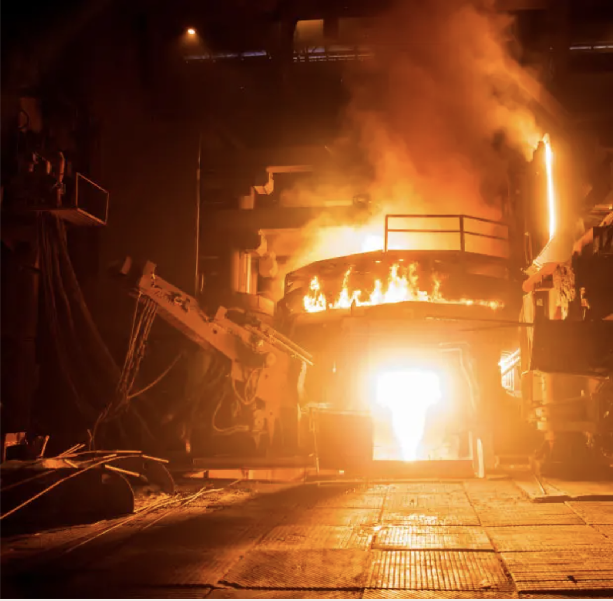

Electric Arc Furnace (EAF)
Operations & Reliability Engineering
Industrial-scale process engineering experience focused on maintenance, reliability, and real-time troubleshooting in steel manufacturing.

Overview
Worked on Electric Arc Furnace (EAF) systems in a high-temperature steel melting environment, focusing on process reliability, maintenance planning, and rapid failure response. This experience built strong fundamentals in real-world process engineering, decision-making under pressure, and cross-functional coordination.
1. Strategic Spare Parts Planning
Planned critical EAF spare parts inventory for a 6-month horizon by analyzing historical failure patterns and vendor lead times. Coordinated with suppliers to ensure availability of high-wear components.
- Reduced stockout risks for electrodes and cooling components
- Improved maintenance schedule adherence

2. Live Furnace Failure Repair
Diagnosed and repaired a coolant leak during active furnace operation, preventing potential shutdown and safety risk.
- Led a 3-person technical team
- Executed repair under high-temperature conditions
- Avoided significant production downtime
3. CAD-Based Retrofitting
Designed and implemented custom retrofit components for worn furnace parts using CAD and in-house machining resources.
- Reduced repair turnaround time
- Enabled faster on-site recovery vs external sourcing

Skills & Tools
- Process Engineering & Industrial Operations
- Preventive Maintenance & Reliability
- Root Cause Analysis
- AutoCAD & P&ID Interpretation
- Vendor Coordination
- High-Temperature System Handling